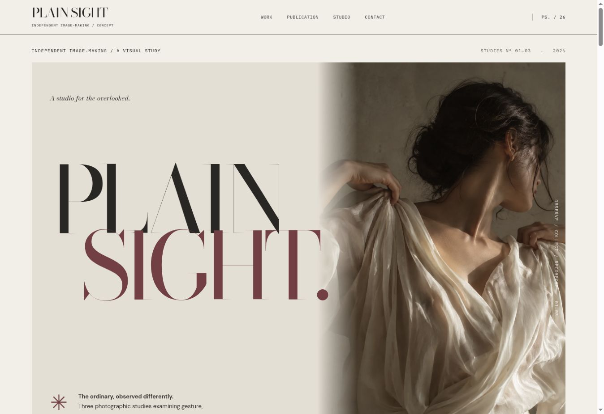
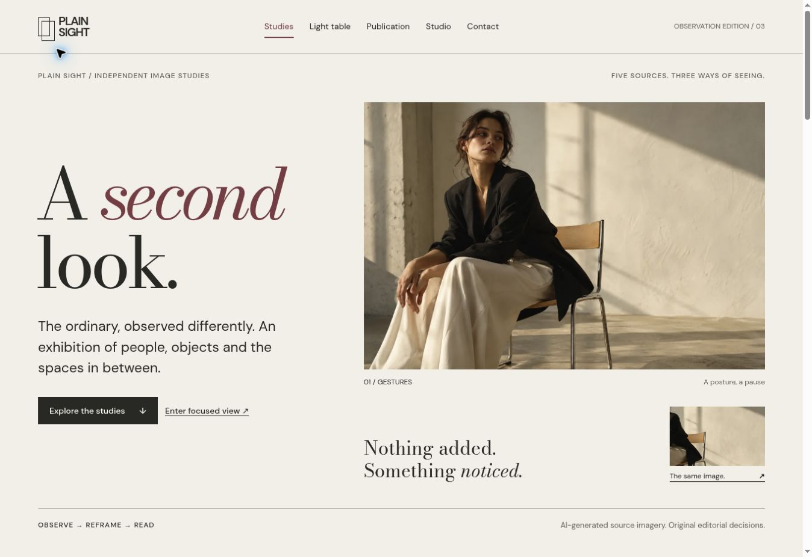
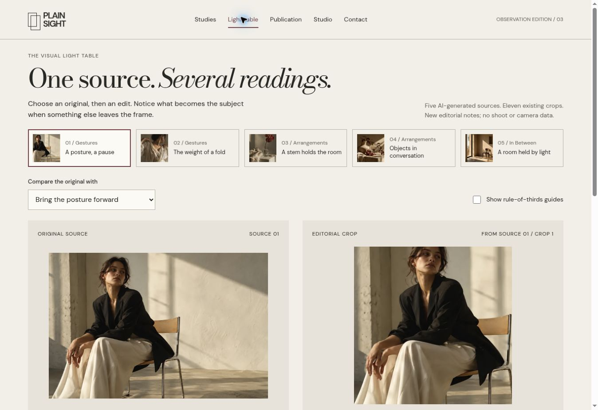
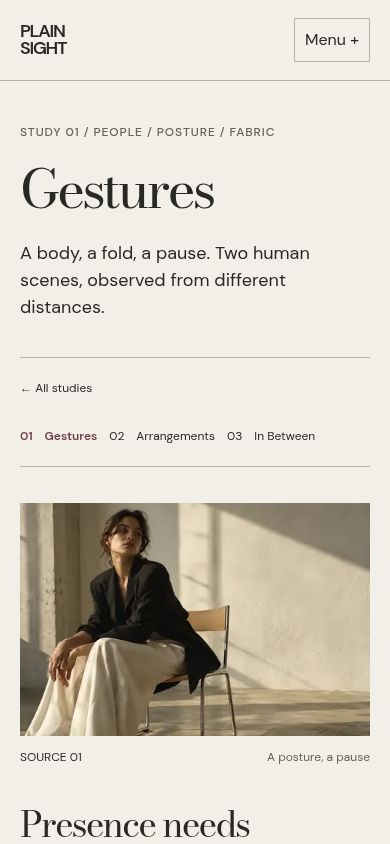

Confused image lineage
Generic crop labels mixed originals and derivatives. Five source records now retain their identity across all views.
CASE STUDY / VISUAL IDENTITY × INTERACTION DESIGN
How can a digital exhibition encourage a second look without making the first one difficult?
01 / THE CREATIVE QUESTION
The original had a strong image world and real graphic artifacts. Its interface did little to explain the relationship between source, crop and editorial decision.


Generic crop labels mixed originals and derivatives. Five source records now retain their identity across all views.
The old next-study route looped from Arrangements to Gestures. Explicit chapter navigation now includes all three studies.
The old page previews were raw photographs. The reader now displays actual rendered pages from the linked PDF.
02 / RESEARCH & ALTERNATIVES
Three directions were considered: a sequential Digital Exhibition, a fast Observation Index and a page-led Living Publication. The index offered the clearest connection between five sources and eleven derivatives. Exhibition pacing became an optional focused view; the publication retained its own reading rhythm.
Vignelli’s Unigrid informed shared structural alignment. Irma Boom’s book work informed sequence and changes of scale. Magnum Contact Sheets informed the visibility of editing decisions. Norman’s discoverability principles constrained the controls. These are transferable principles, not layouts copied from those works.
The research ledger contains 28 credited sources, with access and evidence limits. Pinterest pages were inaccessible; no unseen moodboard is claimed.
03 / THE EXPERIENCE ARCHITECTURE
These are tasks, not three competing navigation systems. Every stage has an ordinary link back to the collection.
DISCOVER
Visitors can enter a subject immediately or use the image index. Filtering updates the URL and the visible count.
Try the index ↗LOOK
A manual viewer shows the entire source image, position, previous/next controls and a clear exit. Escape returns focus to the starting control.
Try focused viewing ↗UNDERSTAND
The light table pairs one original with its actual crop. Text explains the gain and the tradeoff. There is no drag-only control or invented camera metadata.
Try the light table ↗

04 / THE SYSTEM
Bodoni Moda provides the editorial display voice. DM Sans handles body text, captions, navigation and controls. The previous overlapping four-family system and second override stylesheet are removed. Fonts are served locally.
DISPLAY / BODONI MODA
A second look.
TEXT & CONTROLS / DM Sans
Original source · Compare the framing · Page 07 of 24
Paper#f2efe8
Ink#282824
Annotation#723e43
Focus#115b8b
A twelve-column conceptual grid becomes explicit named layouts: intimate portrait relationships for Gestures, balanced object pairs for Arrangements, and generous spatial intervals for In Between. Mobile uses normal vertical flow; meaningful work is never hidden to fit.
Controls have visible focus, text labels and practical touch areas. Motion is brief feedback or an optional specimen. The primary content remains visible with reduced motion and without JavaScript.
Read the component and state rules ↗05 / FROM SOURCE TO PUBLICATION
The 24-page edition was inspected page by page. The reconstruction repairs the obscured IN BETWEEN title, replaces ambiguous frame numbering with source/crop identities and develops a more deliberate progression through context, detail and reflection.
Actual PDF renders power the online reader. A page index, chapter jumps, enlargement, text companion and stable page URLs support both quick inspection and sustained reading. The PDF remains a digital review specimen, not a certified print-production file.
06 / IMPLEMENTATION & VALIDATION
Static HTML carries the content. A small shared data model keeps sources, crops, chapter links and publication destinations aligned. JavaScript adds focused viewing, comparison, history-aware navigation and reading controls. There is no account, backend or saved personal collection.
Verification covers asset paths, source relationships, URL-state boundaries, chapter navigation and the actual browser journeys. The QA record states the commands, widths and interactions checked, with screenshots and remaining limits.
No interviewed participants, measured business outcomes or accessibility certification are claimed. Browser checks are implementation evidence, not proof that visitors understand the experience.
Ask a first-time viewer to identify which images are original and which are crops, then find the corresponding publication page. Observe whether the light table clarifies that relationship without explanation. Follow with screen-reader and physical-device sessions before claiming broader accessibility or usability results.